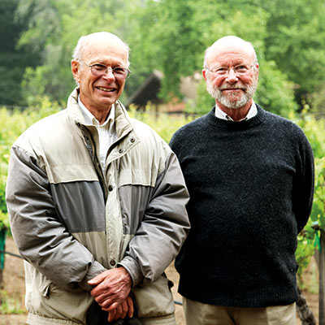
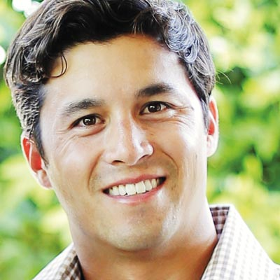
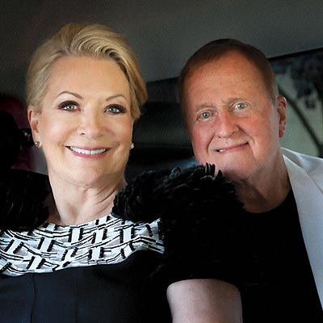
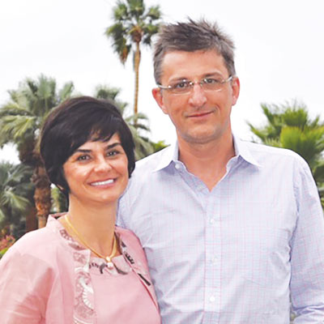
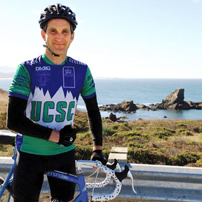
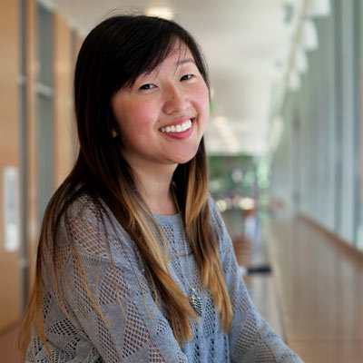

Stories
-

Ricky Bluthenthal: Why do I give to UC Santa Cruz?
UC Santa Cruz had a big impact on my life when I was a student, and it still does. Being there helped me figure out how the world worked.
-

Gratitude for a life of discovery
Siegmund Gutman attributes his life of discovery and inquiry to the interdisciplinary training he got at UC Santa Cruz. His way of expressing his gratitude? Monthly donations.
-

McHenry’s legacy continues
UC Santa Cruz’s founding chancellor Dean McHenry set the tone for the fledgling campus when it opened 50 years ago. Now his estate is sustaining his support of UC Santa Cruz long into the future.
-

Saving history
Donors helped sociology graduate student Jimiliz Valiente-Neighbours preserve a piece of history.
-

Sustaining her vision
Mary Katherine Long's death at 53 was a great shock to her family. Her husband, Professor of Computer Science Darrell Long, decided to commemorate his wife by establishing the Mary Katherine Long Endowed Scholarship Fund.
-
Opening the way
An Alumni Association scholarship unlocked opportunities for student Brandon Vi.
-
Drawing on Experience
Seeking to ensure that the transformative educational experiences he had as a UC Santa Cruz student continue, alumnus Jock Reynolds has established the Alumni Fund for Visiting Artists.
-
Growing a Legacy
Third-generation Central Valley farmer Sharon Naraghi fell in love with UC Santa Cruz's sustainable farming program when she visited the campus's organic farm stand and signed up for a farm-to-fork dinner.
-

Starting a virtuous cycle
Darren Shou of Symantec has a simple explanation for his company's $500,000 contribution toward a $1 million endowment to establish a chair in storage and security at UC Santa Cruz.
-

Stephanie Harkness: Why do I give to UC Santa Cruz?
Giving to UC Santa Cruz allows us to support what inspires and fires our imaginations, whether it's groudbreaking scientific research, experiential education, or interdisciplinary learning.
-

Help for those with the least
Investor Youri Bujko and his wife Luciana Andrade pledged $50,000 to help underprivileged students study the arts at UC Santa Cruz.
-

Nurturing diversity in the sciences
Julie Packard (Crown '74, biology; M.A. '78) has a lifelong love of nature and biology.
Recognizing the institution that nurtured her, she gave $1 million gift to establish the Dean's Fund for Diversity in the Sciences. -

In memory of Josh
The family and close friends of Josh Alper are sustaining the memory of this alumnus, beloved staff member, and avid bicyclist with the Joshua Alper-Marines Foundation.
-
Paul Hall: Why do I give to UC Santa Cruz?
My years here sharpened my thinking, taught me the value of interdisciplinary learning, and set me on my way in life.
-

Paying it forward
Quan Tran got some much-needed financial support—and a big morale boost—when she received a $2,500 Senior Class Council scholarship, with money raised by members of the Class of 2013.